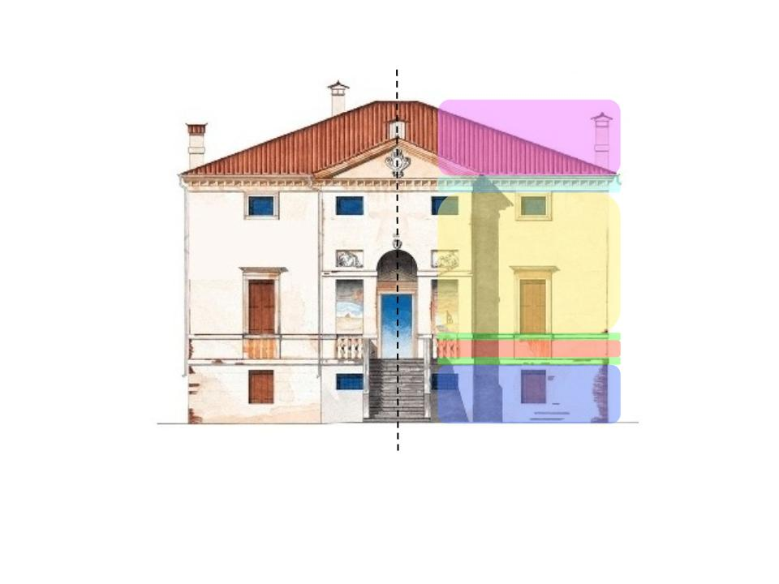

Presentation page for the final project of CG
The Villa Forni Cerato is a 16th-century villa in Montecchio Precalcino, Province of Vicenza, northern Italy. Its design is attributed to Andrea Palladio and his client is assumed to have been Girolamo Forni, a wealthy wood merchant who supplied building material for a number of the Palladio's projects. The attribution to Palladio is partly on stylistic grounds, although this is a complicated issue - the building departs from the Palladian norms.
The villa was probably built in the 1540s modifying an existing building on the site. The double name Forni-Cerato, which it is always given, dates back to 1610.In that year the building, which belonged to Girolamo Forni who can be regarded as having commissioned it, passed in accordance with a provision in his will into the ownership of Giuseppe, Girolamo and Baldissera Cerato. Both its attribution to Palladio and the assumption that Girolamo Forni had it built remain a matter of speculation. The first reference to the architect being Palladio is in the 18th century (when it was mentioned by the architects Francesco Muttoni and Ottavio Bertotti Scamozzi). However, modern research agrees almost unanimously with their opinion.
Looking at the villa can be seen that it is a highly symmetrical building. Moreover the villa seems to be built in layers, so in the work-flow of making the model was exactly that: layers.

So the model was build as much as possible only on half and add some pieces later when making only half of that part was not the smartest move.
Some details like the banister's pillar has a well defined smooth form. For
modelling that form instead of doing it by eye I develop a little browser
application that let me retrace a Bézier curve in an image moving around the
geometrical handles and it print the point of all the them. This little
application was develop using Javascript and the svg tag using
jQuery and Raphaël as
support library.
Here we can see the tool in action on the pillar
And here we can see the result
Here again the tool for the roof decoration
And here the resulting model
The application itself was the result of a very quick coding resulting an application with no API and not so easy to use from external user, so I decided to not publish it.
Taking performance into account, I started looking into the Plasm.js language
and saw that all function that take a Model as a paramether return a new Model
with the modification applied. For some function like COLOR I thought it was
pretty useless, so I use the OO interface underline the functional one and use
the color method on the model itself. The same approach was used for the
affine transformation on the Model that I retain useless to clone such the
stairway: there's only one stairway, why whould I wanna clone it to translate in
the right spot?
Looking into the Plasm.js code I had a better look to the function I was using in the project, so either to the STRUCT function. the code is really short
/**
* STRUCT
*
* @param {Array} items
* @return {plasm.Model}
* @api public
*/
fun.STRUCT = function (items) {
var transformations = function (o) {return o;};
var objects = [];
temp = [];
items.forEach(function (item) {
if (!(item instanceof plasm.Model) &&
!(item instanceof plasm.Struct)) {
transformations = COMP2([transformations, item]);
} else {
// temp.push(APPLY([transformations, item]).clone());
objects.push(APPLY([transformations, item]));
}
});
return new plasm.Struct(objects, p);
};
Studying the code as suggested by @Rayzen I commented out the line as showed
above since it clones all the models and then do nothing with them lowering the
performance, plus on every Model in the items Array will be applied the
composition of all the preceding functions; but as mentioned earlier all the
function return a clone of the model so a composition of N function will clone
the Model N times. When this is done on few pieces the performance issue is
not so marked, but when is done on many curved pieces like in my case the
performance would be an issue. So since my villa was built through layer from
the ground up to the roof and these little pieces are part of the roof I worked
around this snag translating these parts through the OO method translate and put
these part at the begin of the STRUCT so it wasn't clone many times from the
functions in the struct
var villa = STRUCT([
Roof_Decorations().translate([Z],[BASEMENT_HEIGHT+3*CURBE_HEIGHT+MIDDLE_WALL_HEIGHT+UPPER_WALL_HEIGHT]),
Base(),
Floor(), // that is the basement floor
stairs,
Basement(),
Front_Basement_Grid(),
...